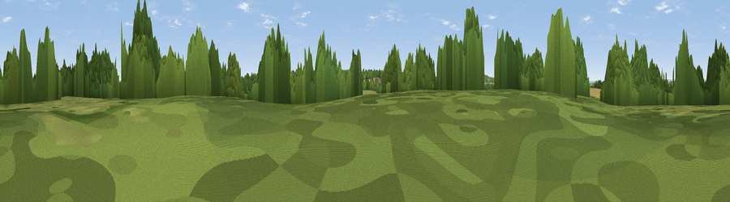

Moorcourt Hill
#39703 in England · top 73% of its area beats it · near SparsholtThe view, rendered

A 360° render of this exact spot computed from the terrain model, tree cover and land cover — summer colours, afternoon light, calibrated against photographs of famous viewpoints. Real trees, hedges and buildings will differ in detail.
The panorama
Grey silhouette: terrain skyline in each direction (720 bearings, Earth curvature and refraction included). Dashed green: skyline with trees (+15 m) and buildings (+8 m) as obstacles. Blue strip: how far the ground is visible on each bearing.
Where the view opens
Wedge length = distance to the farthest visible ground on that bearing (vegetation-aware). Rings at 10, 25 and 50 km.
What fills the view
51% cropland · 31% woodland · 18% grassland ·
Angular shares of the visible panorama (visual magnitude), not map area. Landscape diversity 0.46 (0–1 Shannon).
Key numbers
More beautiful places nearby
The staircase of upgrades: each row has a higher view potential than everything closer. Driving times are estimates from straight-line distance, calibrated against real road routing — check an actual route before setting out.
| Place | Direction | Drive | Score |
|---|---|---|---|
| Viewpoint near Sparsholt | SW · 4 km | ~9 min | 66.9 |
| Beacon Hill | ESE · 19 km | ~33 min | 71.7 |
| Viewpoint near Meonstoke | ESE · 23 km | ~38 min | 74.8 |
| Beacon Hill | N · 26 km | ~42 min | 76.7 |
| Viewpoint near Buriton | ESE · 30 km | ~48 min | 80.0 |
| Beacon Hill | ESE · 39 km | ~59 min | 85.8 |
| Mottistone Down | S · 47 km | ~67 min | 87.2 |
| St Catherines Hill | S · 54 km | ~76 min | 87.6 |
51.07961, -1.38217 · source: osm peak · position refined by local search. Computed location — check access rights before visiting.